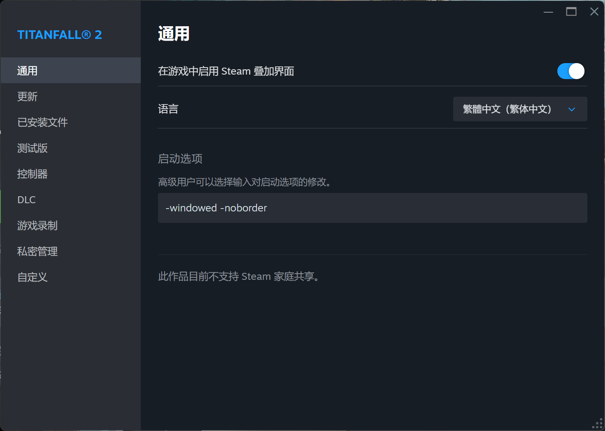
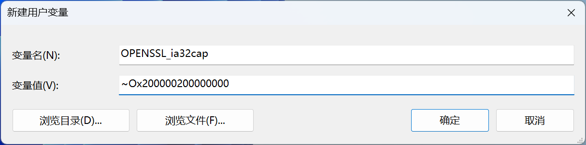

游戏推荐设置
中字英配
众所周知，泰坦陨落2的官中挺好的，就是有点烂，但台配实在过于出戏，这里记录一下怎么设置为中字英配。
方法来源于这个视频，下面总结一下。
下载网盘里的文件，提取码：2l1e。
在 Steam 中将游戏语言改成英文，打开游戏根目录下的"r2\sound\"文件夹，备份所有带有 english 字段的文件。
在 Steam 中将游戏语言改成繁体中文，把刚刚备份的文件复制回去。
打开游戏根目录下的"bin\x64_retail\"文件夹，把下载的文件复制进去替换掉原来的client.dll即可。
强制开启无边框窗口
游戏里只能设置为窗口化或全屏，无边框窗口可以在 Steam 里设置。
在 Steam 中找到游戏，点击“管理”，在“通用-启动选项”中输入-windowed -noborder可强制开启无边框窗口。
这样可以避免出现祖传的全屏变窗口化的bug，而且还能享受无边框窗口切多任务不会卡的好处。而且这个方法比用 Watt Toolkit 强制开无边框窗口效果更好。
设置后用 EA App 启动游戏也能生效。进游戏后记得把输入法切成英文键盘。
解决无法进入多人模式的问题
英特尔10代之后的 CPU 普遍存在的问题。
打开控制面板，定位到“控制面板\系统和安全\系统”，左侧导航栏有“高级系统设置”一项（右键“此电脑”，点击“属性”一项即可快速打开），在弹出的对话框中点击“环境变量”。
新建环境变量。
变量名：OPENSSL_ia32cap
变量值：~0x200000200000000
重启电脑即可。
创建时间：2025/11/03
上次修订时间：2025/11/03